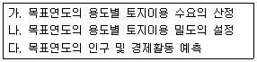
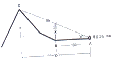
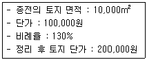
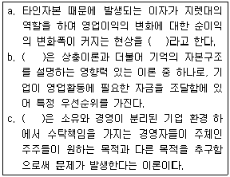
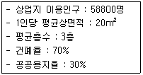
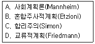
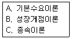
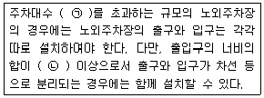

도시계획기사 (2016-03-06 기출문제)
1과목: 도시계획론
1. 토지이용면적의 수요 추정은 주거, 상업, 공업, 녹지지역에 소요되는 면적으로 예측하는 것인데, 일반적으로 이의 수요는 전통적으로 원단위법에 의하면 3단계의 절차를 통하여 추정된다. 아래 과정을 단계별로 바르게 나열한 것은?

- 다-가-나
- 나-가-다
- 다-나-가
- 가-나-다
(정답률: 55%)

2. 도시의 새로운 계획 패러다임의 방향이 아닌 것은?
- 도 · 농 통합적 계획으로의 전환
- 에너지 절약형 도시개발로의 전환
- 입체적 · 기능 통합적 토지이용관리
- 시민참여의 확대와 계획 및 개발주체의 단일화
(정답률: 85%)
3. 인구규모를 기준으로 한 독시아디스(C. A. Doxiadis)의 인간 정주사회 단계에 속하는 것은?
- 부심도시(subpolis)
- 행정도시(politipolis)
- 다핵도시(multipolis)
- 세계도시(ecumenopolis)
(정답률: 72%)
4. 계획이론을 실체적 이론(substantive theories)과 절차적 이론(procedural theories)으로 구분할 때, 다음 중 절차적 이론에 대한 설명으로 옳지 않은 것은?
- 보다 효율적이고 합리적인 계획을 수립하고 실행하기 위한 계획의 과정에 관한 이론이다.
- 경제 또는 사회의 구조나 현상 등을 설명하고 예측하여 문제의 해결 대안을 제시하는 이론이다.
- 계획의 대상이 되는 현상에 대한 이해보다는 계획 그 자체가 어떻게 작용하는가에 관한 이론이다.
- 계획이 추구하는 목표와 가치에 따라 계획안을 만들어내는 과정에 관한 공통적이고 일반적인 이론이다.
(정답률: 56%)
5. 도시지역경제분석의 방법 중 하나인 수출기반모형에 대한 설명으로 틀린 것은?
- 수출산업이란 지역내에서 생산된 상품이나 서비스가 최종적으로 지역 외부인에 의해 소비되는 산업을 말한다.
- 수입산업이란 다른 지역에서 생산된 제품이나 서비스가 지역 내 주민에 의해서 소비되는 산업을 말한다.
- 수출산업과 수입산업의 구분은 민간부문의 기업에만 해당하는 것이 아니라 공공부문에서도 적용된다.
- 수출기반모형은 지역경제를 구성하는 산업을 크게 수출산업과 수입산업으로 구분한다.
(정답률: 60%)
6. 도시의 낙후된 지역에 대한 주거환경의 개선, 기반시설의 확충 및 도시기능의 회복을 광역적으로 계획하고 체계적 · 효율적으로 추진하기 위해 지정하는 재정비촉진지구의 유형구분에 해당되지 않는 것은?
- 주거지형
- 근린재생형
- 중심지형
- 고밀복합형
(정답률: 53%)
7. 허드슨(Hudson)의 분류에 의한 도시계획 이론 중 옳지 않은 것은?
- 종합적 계획은 체계적 접근 방법을 통해서 계획의 문제를 규명하고, 결정론적 모형을 구성하는 특징을 가진다.
- 급진적 계획은 논리적 일관성이나 최적의 해결 대안의 제시보다는 지속적인 조정과 적용을 통하여 목표를 추구하는 접근방법을 제시하였다.
- 교류적 계획은 철학적 사고에서 파생하고 있으며, 계획가와 계획의 영향을 받는 사람들의 대화를 중시 하였다.
- 옹호적 계획은 주로 강자에 대한 약자의 이익을 보호하는데 적용되어 왔다.
(정답률: 82%)
8. 도로의 노면이나 교통광장에 설치된 주차장으로 일반의 이용에 제공되는 주차장의 종류로 옳은 것은?
- 노상주차장
- 노외주차장
- 부설주차장
- 기계식주차장
(정답률: 75%)
9. 우리나라에서 도시기본계획을 도입하게 된 배경이라 볼 수 없는 것은?
- 주민참여의 구체적 실현
- 개발수요에 대한 합리적 대응
- 도시관리계획의 잦은 변경 방지
- 합리적이고 과학적인 도시계획 수립
(정답률: 68%)
10. 도시계획의 필요성으로 옳지 않은 것은?
- 공공재의 부족을 방지하기 위하여
- 토지이용의 효율화를 높이기 위하여
- 인간사회의 개인적인 목표를 이루기 위하여
- 도시가 원활히 기능할 수 있게 하기 위하여
(정답률: 87%)
11. 성장관리에 대해서 주 및 자치제가 자신의 행정구역에 있어서 장래 개발의 속도, 양, 형태, 위치, 질에 의도적인 영향을 주고자 하는 것으로 정의를 내린 학자는?
- J. Gottmann
- P. Healey
- D. Godshalk
- H. Hoyt
(정답률: 64%)
12. 다음 중 현대 도시문제에 대한 설명으로 옳지 않은 것은?
- 대도시로의 급격한 인구집중과 도시성장은 오늘날의 도시문제를 유발한 원인이 되었다.
- 도시의 과밀화로 인해 주택부족, 교통문제, 공공시설과 생활편의시설의 부족 등의 문제가 나타난다.
- 현대 도시문제는 사회 · 문화 · 경제 뿐 아니라 물리적으로도 주변 도시들과 상호 긴밀하게 연관되어 있다.
- 도시의 성장이나 쇠퇴로 인해 나타나는 도시문제들은 전체 시민보다 일부 계층에 한정적으로 영향을 미친다.
(정답률: 86%)
13. 장래 인구예측에 있어서 초기년도와 최종년도의 인구만을 고려하여 그 증가율을 산정할 경우 해당기간 동안 인구의 증감이 교차되는 도시에서 적용하기가 어려운데 이와 같은 결점을 보완한 인구예측방법은?
- 최소자승법
- 등차급수법
- 등비급수법
- 회귀분석법
(정답률: 53%)
14. 인구의 규모, 분포, 구조, 그리고 주택의 특성을 파악하기 위해 실시하는 우리나라 인구주택총조사의 실시 주기는?
- 2년
- 5년
- 7년
- 10년
(정답률: 78%)
15. 도시계획에서 주민참여의 순기능이 아닌 것은?
- 소수의 적극적 참여
- 지방자치단체 도시계획 행정의 이해
- 주민의 지지와 협조를 통한 집행의 효율화
- 주민의 권리, 재산상의 침해 예방 또는 극소화
(정답률: 77%)
16. 다음 중 도시규모에 따른 용도지역별 간선도로의 밀도를 틀리게 연결한 것은?(단, 간선도로는 4차로 이상의 도로이다.)
- 소도시(50만 인 미만) - 상업지역 - 1~2km/km2
- 중도시(50만~100만 인) - 공업지역 - 2~4km/km2
- 대도시(100만 인 이상) - 주거지역 - 2~4km/km2
- 대도시(100만 인 이상) - 상업지역 - 5~10km/km2
(정답률: 46%)
17. 다음 중 고대 로마 도시의 도시계획적 특성에 대한 설명으로 옳지 않은 것은?
- 평탄한 지형에 형성되었고, 넓고 체계적인 도로망을 갖추었다.
- 그리스 도시들보다 체계적으로 건설되었으며 규모가 훨씬 컸다.
- 시저(Caesar)는 교통문제의 해결을 위해 마차의 주간통행금지법을 시행하였다.
- 로마의 중심광장인 아고라는 신전, 법정, 의사당 등의 복합적인 기능을 수행하였다.
(정답률: 67%)
18. 다음 중 1960년대 이후 나타난 우리나라 도시화현상의 특징으로 가장 거리가 먼 것은?
- 짧은 기간 동안 산업화와 더불어 진행되었다.
- 대도시와 수도권 중심으로 인구가 집중되었다.
- 생활권 중심의 지방거점도시들이 균형적으로 성장하였다.
- 경부축을 중심으로 산업단지의 개발 등 집중적인 투자가 진행되었다.
(정답률: 85%)
19. 국토의 계획 및 이용에 관한 법률상 용도지역 중 관리지역의 종류에 해당되지 않는 것은?
- 보전관리지역
- 생산관리지역
- 계획관리지역
- 자연환경보전지역
(정답률: 71%)
20. 도시개발사업의 시행방식에 대한 설명으로 옳은 것은?
- 수용 및 사용방식은 사업을 위한 용지매입이 불필요하고 토지소유자의 재정착이 가능하다.
- 환지방식은 토지매입을 위한 초기비용이 과다하고 매수반대로 사업기간이 장기화 될 수 있다.
- 환지방식은 사업성을 이유로 기반시설공급이 부족하거나 지가상승 및 개발이익이 사유화 될 수 있다.
- 수용 및 사용방식과 환지방식은 혼용할 수 없다.
(정답률: 60%)
2과목: 도시설계 및 단지계획
21. 이상 도시 형성의 사조 중 주택단지에 가장 영향을 준 것은?
- Linear town
- Siedelung
- Mother town
- Garden city
(정답률: 72%)
22. 래드번(Radburn) 주택단지계획의 특성이 아닌 것은?
- 주거단지내 통과교통을 배제함
- 학교는 보행자 도로체계와 분리하여 계획함
- 차량진입은 cul-de-sac을 통하여 주택의 입구까지만 허용함
- 주도로와 보행자도로가 만나는 곳은 입체교차시설을 설치함
(정답률: 64%)
23. 격자형 가로망의 특징에 해당하지 않는 것은?
- 토지의 분할이 용이하다.
- 단계별 개발이 용이하다.
- 도로의 위계를 쉽게 설정할 수 있다.
- 도시경관의 정연성을 부각시킬 수 있다.
(정답률: 67%)
24. 다음 중 500세대의 주택을 건설하는 주택단지에 설치하여야 하는 기준 시설에 해당하지 않는 것은?(단, 사업계획승인권자가 설치할 필요가 없다고 인정한 경우는 배제한다.)
- 경로당
- 어린이놀이터
- 유치원
- 주민운동시설
(정답률: 60%)
25. 복층형 주택(메조네트, maisonnette) 형식에 대한 설명으로 틀린 것은?
- 1개 주호가 2개 층을 사용하는 경우 duplex라고 한다.
- 단면형태가 복잡해져 구조, 설비 등의 구성 및 설계에 세심한 고려가 필요하다.
- 일반적으로 작은 규모(약 132m2 이하)의 주거형식으로 적합하다.
- 공용복도가 없는 층에서는 직통 두 방향으로 개구부를 둘 수 있어서 통풍과 채광에 유리하다.
(정답률: 64%)
26. 다음 중 주거단지계획의 기본적인 목표와 거리가 먼 것은?
- 에너지의 효율적 이용과 절약
- 거주자 상호간 접촉의 최소화
- 거주자의 건강과 쾌적성 유지
- 변화에의 융통성과 적응성 부여
(정답률: 86%)
27. 페리(Clarence A. Perry)가 제안한 근린주구이론은 많은 계획을 통하여 변화와 비판을 받았다. 다음 중 근린주구 이론의 비판으로서 가장 적합한 것은?
- 표준화에 따른 공공 편익시설의 부족
- 통과교통 배제에 따른 도로망 체계의 불합리성
- 공동체 의식을 제고하기 위한 영역성의 결여
- 동질의 건축물 시설 집합에 따른 배타적인 지역 공간 형성
(정답률: 49%)
28. 다음 중 기능 및 목적이 다른 시설은?
- 가로등
- 신호등
- 횡단보도
- 버스정차대
(정답률: 71%)
29. 다음 단독 및 공동주택단지의 가구구성에 관한 설명 중 틀린 것은?
- 단독주택지 : 소가구 구성시 보통 인지 가능한 획지의 수가 10~12개라고 보면 가구의 길이는 90~130m의 범위가 적당하다.
- 공동주택지 : 연립주택은 경관상 단독주택지 내에 혼재되어도 무리가 없고 보통 한 동이 12~18호로 구성되는 것이 좋다.
- 단독주택지 : 가구의 단변길이를 조작할 수 있는 요소는 세장비이며, 이때 단변의 길이는 가구규모에 따라 30~50m의 범위를 갖게 된다.
- 공동주택지 : 아파트단지의 경우는 최소대지면적은 3ha 이상이 되어야 하며 생활편익시설을 모두 갖추기 위해서는 30~50ha 정도가 되어야 바람직하다.
(정답률: 56%)
30. 다음 중 단독주택 또는 연립주택과 비교하여 아파트 형식의 주택이 갖는 장점이 아닌 것은?
- 주거지의 고밀화가 가능하다.
- 프라이버시 확보와 개성있는 외관 형성이 용이하다.
- 공동의 오픈스페이스 확보와 커뮤니티 형성에 유리하다.
- 공동설비로 공사비를 절감할 수 있다.
(정답률: 76%)
31. 단지조사의 원칙으로 가장 올바른 것은?
- 단지조사 자료의 수집은 계획과정 내내 지속된다.
- 본격적인 조사에 앞서 현지답사는 선택적이다.
- 조사 초기에 가능한 모든 자료를 수집해야 한다.
- 단지조사 자료체계는 어떤 계획에서나 동일하다.
(정답률: 66%)
32. 다음 중 단지 내의 일반 건축용지, 녹지용지, 교통용지를 제외한 주택용지만에 대한 밀도는?
- 근린밀도(neighborhood density)
- 총밀도(gross density)
- 중밀도(medium density)
- 순밀도(net density)
(정답률: 80%)
33. 우리나라 주거단지의 문제점 개선방안에 관한 설명 중 부적절한 것은?
- 단지의 개방성 확보
- 단지의 편익시설 확보
- 새로운 주거유형 및 건물배치기법 연구
- 슈퍼블록(Super block) 및 고층위주의 개발
(정답률: 74%)
34. 산업입지 및 산업 단지의 조성사업에서 환경영향평가 대상사업에 해당되는 내용으로 옳지 않은 것은?
- 「도시개발법」에 따른 도시개발사업 중 상업용지조성사업의 사업면적이 10만제곱미터 이상인 사업
- 「중소기업진흥에 관한 법률」에 따른 단지조성사업 중 사업면적이 15만제곱미터 이상인 사업
- 「산업입지 및 개발에 관한 법률」에 따른 산업단지 재생사업 중 사업면적이 15만제곱미터 이상인 사업
- 「연구개발특구의 육성에 관한 특별법」에 따른 연구개발특구의 조성사업 중 사업면적이 15만제곱미터 이상인 사업
(정답률: 49%)
35. 주차수요 추정방법 중 주차발생원단위법에 의한 계산식의 용어 설명이 틀린 것은?
- P : 주차수요(대)
- U : 첨두시 용도별 주차발생량 (대/1000m2 · 시간)
- F : 장래 계획 건물연면적 (1000m2)
- e : 건물이용자 중 승용차 이용률(%)
(정답률: 66%)
36. 세계 최초로 전원도시(garden city)가 건설된 곳은 영국의 어느 곳인가?
- Harlow
- Stevenage
- Letchworth
- Basildon
(정답률: 67%)
37. 공원 · 녹지체계의 유형 중 일정폭의 녹지를 직선적으로 길게 조성하는 것으로 완충녹지에서 많이 볼 수 있으며, 인도의 찬디가르(Chandigarh)에서 볼 수 있는 유형은?
- 집중형
- 분산형
- 대상형
- 격자형
(정답률: 75%)
38. 산 조망경관 보호를 위해 A지점에서 산 정상C를 바라볼 때, 장면(Scene)의 수직 시야에서 건축물을 산 높이의 1/2 이하로 건축해야 한다면, B지점의 건축물 높이(X)는 얼마까지 가능한가?

- 약 4m
- 약 7m
- 약 10m
- 약 13m
(정답률: 39%)
39. 학자와 주장 이론이 잘못 짝지어진 것은?
- 고든 쿨렌(Gordon Cullen) : 연속장면(Serial Vision)
- 케빈 린치(Kevin Lynch) : 가독성(Legibility)
- 카밀로 지테(Camillo Sitte) : 연속경관(Choregraphic Sequence)
- 필립 티엘(Philip Thiel) : 스마트 스페이스(Smart Space)
(정답률: 48%)
40. 6ha의 대지에 1호당 순대지 200m2의 단독주택필지를 계획할 때몇 호 건설이 가능한가?(단, 순 주택용지율 60%, 도로 및 기타 공공용지율 40%)
- 120호
- 150호
- 180호
- 300호
(정답률: 67%)
3과목: 도시개발론
41. 다음 중 상업적이나 공공적인 목적을 위해 지상공간의 하부에 자연적으로 형성되어 있던 공간으리 개발이나 인위적인 굴착을 통해 생성한 공간을 무엇이라 하는가?
- 지하공간
- 녹지
- 오픈스페이스
- 주차장
(정답률: 78%)
42. 다음 중 도시재정비촉진을 위한 특별법에 따른 재정비촉진사업에 해당되지 않는 것은?
- 도시 및 주거환경정비법에 의한 주거환경개선사업
- 도시개발법에 의한 도시개발사업
- 전통시장 및 상점가 육성을 위한 특별법에 의한 시장정비사업
- 택지개발촉진법에 의한 택지개발사업
(정답률: 52%)
43. 다음 중 타당성 분석에 대한 설명으로 옳지 않은 것은?
- 타당성은 사업의 확실한 성공을 보장하고자 한다.
- 타당성 분석은 선택된 수단의 적합성을 실험하는 것이다.
- 타당성 분석이란 사업이 직면한 모든 제약하에서 프로젝트의 적합성을 실험하는 것이다.
- 타당성은 분석 이전에 설정된 프로젝트의 명료한 목적에 대한 충족 여부에 따라 결정된다.
(정답률: 73%)
44. 다음 중 개발권양도와 관련된 설명 중 옳지 않은 것은?
- 개발권 거래시장의 조성이 필요하다.
- 개발유도지역의 규제가 강할수록 제도의 실현성이 높다.
- 토지소유자와 비소유자 간의 형평성도 제고할 수 있다.
- 개발유도지역의 경우 과밀이나 혼잡 등 사회적 비용을 발생시킬 수 있다.
(정답률: 44%)
45. 평가식을 이용한 환지설계방식의 경우 다음과 같은 조건에서 환지면적은 얼마인가?

- 5000m2
- 5500m2
- 6000m2
- 6500m2
(정답률: 48%)
46. 다음 ( )안의 내용이 순서대로 모두 옳은 것은?

- 지렛대 효과, 대리인이론, 자본조달순서이론
- 재무레버리지효과, 자본조달순서이론, 대리인이론
- 재무레버리지 효과, 자금조달순서이론, 경영인이론
- 지렛대 효과, 경영인이론, 자금조달순서이론
(정답률: 69%)
47. 특정지역의 부동산가격규제를 통해 주변지역의 부동산가격이 상승하는 현상을 가리키는 용어는?
- 교외화(suburbanization)
- 도시화(urbanization)
- 풍선효과(balloon effect)
- 나비효과(butterfly effect)
(정답률: 81%)
48. 다음은 사업성분석의 단계를 나타내고 있는데 이 중 분석과정을 가장 알맞게 나타내고 있는 것은?(단, 1단계부터 4단계까지로 나타냄)
- 할인율설정 - 연차별투자비용 추정 - 연차별 분양수입추정 - 현금흐름표 작성
- 직접비 및 간접비 추정 - 분양계획 - 용지별 분양가격 추정 - 사업성 평가
- 할인율설정 - 현금흐름표 작성 - 연차별투자비용 추정 - 연차별 분양수입추정
- 분양계획 - 현금흐름표 작성 - 용지별 분양가격 추정 - 직접비 및 간접비 추정
(정답률: 59%)
49. 민관합동 부동산개발금융방식인 프로젝트 파이낸싱(Project financing)의 자금조달 형태에 관한 설명으로 틀린 것은?
- 자금원 중 자기 자본투자는 투자회수의 순위에서 가장 높은 순위를 지니므로 위험도가 가장 낮다고 할 수 있다.
- 자기자본투자자는 전략적 투자자와 재무적 투자자로 분류되며 재무적 투자자는 사업에 의한 배당수익에 투자목적이 있다.
- 자금원 중 선순위 채권(senior debt)은 프로젝트 파이낸싱에서 가장 큰 비중을 차지하는 자금이다.
- 자금원 중 선순위 채권(senior debt)은 대부분 상업은행으로부터의 차입금이 이에 해당되며 이자수익을 목적으로 투자한다.
(정답률: 73%)
50. 다음 중 지방공사 또는 지방공단의 특징 설명이 잘못된 것은?
- 지방공단은 민관합작에 의한 설립이 불가하다.
- 지방공사는 판매수입으로 경영비용을 조달한다
- 지방공사는 증자를 통한 민간출자는 할 수 없다.
- 지방공단은 특정사업의 수탁에 의해 업무한다.
(정답률: 67%)
51. 다음 중 Calthorpe가 제안한 TOD의 원칙으로 옳지 않은 것은?
- 자동차 중심의 중 · 저밀도 유지
- 주택의 유형, 밀도의 혼합배치
- 지구 내 목적지 간 보행친화적인 가로망 구성
- 역으로부터 보행거리 내에 주거 · 상업시설 설치
(정답률: 77%)
52. 공공사업의 비용과 편익을 사회적 측면에서 분석하여 수익률을 계산하고 이를 바탕으로 공공투자사업이나 정책의 타당성을 분석하는 것을 무엇이라 하는가?
- 재무 분석
- 민감도 분석
- 자금순환 분석
- 경제성 분석
(정답률: 71%)
53. 도시개발사업 시행의 위탁에 관한 내용으로 옳은 것은?
- 시행자가 대통령령으로 정하는 공공시설의 건설 사업에 대한 시행을 위탁할 수 있는 기관에는 한국토지주택공사, 한국철도공사, 한국감정원이 포함된다.
- 시행자는 도시개발사업을 위한 토지 매수업무를 국가나 관할지방자치단체에 위탁할 수 없다.
- 시행자는 도시개발사업을 위한 기초조사와 손실보상 업무에 한해서는 관할지방자치단체에 위탁할 수 없다.
- 시행자는 대통령령으로 정하는 공공시설의 건설과 공유수면의 매립에 관한 업무를 대통령령으로 정하는 바에 따라 국가, 지방자치단체에 위탁하여 시행할 수 있다.
(정답률: 60%)
54. 입체환지의 기준에 적합한 것은?
- 소유면적은 기존의 건축물대장을 기준으로 함
- 입체환지는 집단체비지에 단독주택을 건설하는 경우에 허용함
- 입체환지로 계획수립시는 평가식, 면적식, 절충식에 의한 환지방식 규정을 적용받아야 함
- 입체환지의 대상이 될 수 있는 자는 당해 구역안에 토지와 그 토지에 건축된 주택을 동시에 소유한 자를 말함
(정답률: 56%)
55. 도시개발의 필요성을 설명한 것으로 적절하지 않은 것은?
- 주택, 산업시설, 공공기반시설 등에 대한 새로운 공간 수요가 있기 때문이다.
- 지속가능한 도시발전을 위하여 자연 생태계의 유지관리 수요가 발생하기 때문이다.
- 도시산업구조의 변화를 수용하기 위하여 새로운 개발이 필요하기 때문이다.
- 사회·경제활동의 변화에 따라 새로운 도시공간의 수요가 발생하기 때문이다.
(정답률: 64%)
56. 개발사업의 실행(사업성) 평가를 위해 사용되는 경제적 타당성 분석의 지표가 아닌 것은?
- 순현재가치(NPV)
- B/C 비율
- 내부수익률(IRR)
- 승수효과
(정답률: 73%)
57. 역세권개발구역으로 지정할 수 있는 경우에 해당되지 않는 것은?
- 철도역이 신설되어 역세권의 체계적·계획적인 개발이 필요한 경우
- 철도역의 시설 노후화 등으로 철도역을 증축·개량할 필요가 있는 경우
- 도시의 기능 회복을 위하여 역세권의 종합적인 개발이 필요한 경우
- 노후·불량 건축물이 밀집한 도시환경을 정비할 필요가 있는 경우
(정답률: 79%)
58. 개발사업의 위험은 재무위험, 건설위험, 운영위험, 정책 및 환경위험으로 분류되는데 이중 운영위험에 해당되지 않는 것은?
- 사업협약 이행 위험
- 시설물결함 위험
- 비용증가 위험
- 비활성화 위험
(정답률: 45%)
59. 다음의 경우 상업용지의 면적을 추계한 값이 옳은 것은?

- 800000m2
- 1000000m2
- 1020400m2
- 1120000m2
(정답률: 57%)
60. 일반적으로 도시개발의 유형을 신개발과 재개발로 분류하는 방식은?
- 개발 주체에 따른 분류
- 개발 대상지에 따른 분류
- 토지의 용도에 따른 분류
- 토지의 취득방식에 따른 분류
(정답률: 64%)
4과목: 국토 및 지역계획
61. 다음 중 A시의 총 고용인구가 100만명이고 이 지역 기반산업의 고용인구가 70만명일 때 기반산업에 대한 총고용의 승수효과는 얼마인가?
- 4.53
- 3.33
- 2.33
- 1.43
(정답률: 58%)
62. 도시계획을 위한 자료조사방법 중 면접조사 방법이 아닌 것은?
- 전화면접법(telephone interview)
- 개인면접법(personal interview)
- 단체면접법(group interview)
- 우편면접법(mail interview)
(정답률: 71%)
63. 지역계획의 이론적 배경과 그 이론이 등장한 시기의 공간형식이 바르게 짝지어진 것은?
- 이상주의계획 - 기능통합
- 실용적 이상주의 - 공간개발
- 총량성장과 재배분성장 - 지역통합
- 종속이론 - 공간개발
(정답률: 41%)
64. 다음 중 국토계획의 개념을 가장 바르게 설명한 것은?
- 국토계획은 국토에서 일어나는 여러 가지 경제활동의 공간적 배분문제를 다루는 경제계획이다.
- 국토계획은 특정한 지역을 계획대상으로 하는 계획이다.
- 국토계획은 하위계획과 구체적인 집행계획에 지침을 제시하는 지침 제시적인 계획이다.
- 국토계획은 지방정부가 계획수립의 주체가 되는 계획이다.
(정답률: 61%)
65. 다음 지역계획의 이론들을 그 발생시기가 빠른 것부터 순서대로 옳게 나열한 것은?

- A→B→C→D
- A→B→D→C
- A→C→D→B
- A→C→B→D
(정답률: 62%)
66. 다음 중 계획지역(planning region)에 대한 설명에 해당하는 것은?
- 자원분포의 동질성을 확보하기 위해 기후, 지형, 식생, 토양 등 자연적 요소의 분포를 고려하여 결정한다.
- 인간의 경제활동을 중심으로 하나의 중심결절과 배후세력권의 크기를 고려하여 결정한다.
- 경제지표, 즉 소득수준과 산업구조 등이 비슷한 정도를 고려하여 결정한다.
- 투자의 효율성을 증대할 수 있는 충분한 크기의 면적과 투자과실의 공정한 분배가 이루어질 수 있는 면적을 고려하여 결정한다.
(정답률: 38%)
67. 우리나라 국토 및 지역계획의 특징으로 볼 수 있는 것은?
- 상향식 접근방식에 가깝다.
- 단일 목적적 성격을 지니고 있다.
- 지표적 계획으로서의 성격을 지니고 있다.
- 빗물리적 계획의 성격이 강한 계획이다.
(정답률: 68%)
68. 다음 중 튀넨의 농업입지론에서 재배작물의 유형을 결정하는 요소에 해당하지 않는 것은?
- 지대
- 생산지
- 운송비
- 경작지 규모
(정답률: 70%)
69. 다음 중 지역계획의 핵심적 영역이라 할 수 없는 것은?
- 도시 및 대도시권 계획
- 지역사회 및 인적자원 계획
- 지역교통계획
- 경제개발계획
(정답률: 36%)
70. 다음의 지역계획 및 지역개발과 관련된 이론이 등장한 순서가 빠른 것부터 옳게 나열된 것은?

- A → B → C
- C → B → A
- B → A → C
- B → C → A
(정답률: 50%)
71. 친환경적 공간계획(국토계획, 지역계획, 도시계획)의 수단으로 적합하지 않은 것은?
- Green GNP 개념 도입
- 거대도시와 도시광역화 개발
- 압축도시(Compact City) 개발
- 복합토지이용(Mixed Land Use) 도입
(정답률: 85%)
72. 크리스탈러(W. Christaller)가 도시정주지를 설명하는데 사용한 R(Range, 범위)과 T(Threshold, 한계거리)의 개념에 따라, 기업이 손해를 보는 상황을 설명한 것은?
- R ＞ T
- R ＜ T
- R = T
- T = 1
(정답률: 66%)
73. 국토기본법에서 제시하고 있는 국토정책위원회에 관한 사항으로 옳지 않은 것은?
- 국무총리 소속으로 둔다.
- 위원장은 국토교통부장관이다.
- 분야별로 분과위원회를 둘 수 있다.
- 국토종합계획에 관한 사항을 심의한다.
(정답률: 67%)
74. 지프(Zipf)의 도시 순위규모법칙(rank-size rule)에 대한 설명으로 틀린 것은?
- 도시규모와 순위는 역상관 관계가 있다는데 착안하였다.
- 매개변수 q값이 1보다 클 경우 도시규모 분포가 종주화 상태에 있는 것을 나타낸다.
- 공업화된 국가에서는 농업국가보다 법칙적용의 편차가 크게 나타나므로 적용이 어렵다.
- 실제의 도시 분포상태를 경험적으로 파악하는데 도움이 되나 이론적 기반이 미약하다.
(정답률: 57%)
75. A도시의 인구는 100만, B도시의 인구가 25만이며 두 도시간의 거리가 60km 일 때, 두 도시의 세력이 분기되는 지점은 A도시로부터의 거리가 얼마인가?(단, 두 도시 사이에는 아무런 도시도 입지하지 않는다고 가정한다.)
- 20 km
- 30 km
- 40 km
- 45 km
(정답률: 49%)
76. 다음 중 성장거점이론의 전신인 성장극(growth pole)이론에 관한 것은?
- 인구규모가 큰 대도시 중심
- 인구유입이 빠르고 시가화지역이 넓은 거점 도시
- 성장속도가 빠르고 전·후방 연관 효과가 큰 경제활동 분야
- 성장잠재력이 크고 각종 도시시설이 잘 구비되어 있는 지역중심의 도시
(정답률: 67%)
77. 부드빌(Boudeville)이 정의한 지역구분에 해당하지 않는 것은?
- 동질지역(homogeneous region)
- 결절지역(nodal region)
- 계획지역(Planning region)
- 추진지역(propulsive region)
(정답률: 80%)
78. 제3차 국토계획의 전략 중 지방대도시와 중추관리기능이 올바르게 연결된 것은?
- 부산 : 업무중추기능, 첨단산업 및 패션기능
- 대구 : 행정기능, 첨단연구기능
- 대전 : 국제금융기능, 국제무역기능
- 광주 : 첨단산업기능, 예술문화기능
(정답률: 69%)
79. 도시 및 지역개발의 이론과 실천분야에 있어서 선구적 국가는?
- 미국
- 영국
- 일본
- 프랑스
(정답률: 57%)
80. 도시지역과 그 주변지역의 무질서한 시가화를 방지하고 계획적 · 단계적인 개발을 도모하기 위하여 일정 기간 동안 시가화를 유보할 필요가 있다고 인정되어 국토교통부장관이 지정하는 구역은?
- 특정시설제한구역
- 시가화조정구역
- 개발제한구역
- 도시개발예정구역
(정답률: 84%)
5과목: 도시계획관계법규
81. 주택법에 따른 용어의 정의가 틀린 것은?
- 공동주택이란 건축물의 벽 · 복도 · 계단이나 그 밖의 설비 등의 전부 또는 일부를 공동으로 사용하는 각 세대가 하나의 건축물 안에서 각각 독립된 주거생활을 할 수 있는 구조로 된 주택을 말한다.
- 국민주택이란 국민주택기금으로부터 자금을 지원받아 건설되거나 개량되는 주택으로서 주거전용면적이 1호 또는 1세대당 85제곱미터 이하인 주택을 말한다.
- 도시형 생활주택이란 150세대 미만의 국민주택규모에 해당하는 주택으로서 대통령령으로 정하는 주택을 말한다.
- 에너지절약형 친환경주택이란 저에너지 건물조성기술 등 대통령령으로 정하는 기술을 이용하여 에너지 사용량을 절감하거나 이산화탄소 배출량을 저감할 수 있도록 건설된 주택을 말한다.
(정답률: 74%)
82. 주차장법에서 단지조성사업 등을 하는 경우에는 일정 규모 이상의 노외주차장의 설치를 의무화하고 있다. 여기에 해당하는 단지조성사업이 아닌 것은?
- 도시재개발사업
- 도시철도건설사업
- 산업단지개발사업
- 초고층건물조성사업
(정답률: 60%)
83. 도시개발법에 의하여 도시개발구역으로 지정할 수 있는 규모 기준으로 옳지 않은 것은?
- 도시지역안의 주거지역 : 1만 제곱미터 이상
- 도시지역안의 자연녹지지역 : 3만 제곱미터 이상
- 도시지역안의 공업지역 : 3만 제곱미터 이상
- 도시지역 외의 지역 : 30만 제곱미터 이상
(정답률: 74%)
84. 국토종합계획에 포함되어야 할 내용이 아닌 것은?
- 개발제한구역의 지정 및 관리에 관한 사항
- 국토의 균형발전을 위한 시책 및 지역산업육성에 관한 사항
- 토지, 수자원, 산림자원, 해양자원 등 국토자원의 효율적 이용 및 관리에 관한 사항
- 국가경쟁력 향상 및 국민생활의 기반이 되는 국토 기간 시설의 확충에 관한 사항
(정답률: 56%)
85. 주택건설기준 등에 관한 규정에서 제시하는 공동주택 건설지점의 소음도는 최대 얼마 미만이 되도록 하여야 하는가?
- 55 dB
- 60 dB
- 65 dB
- 70 dB
(정답률: 76%)
86. 다음 중 국토교통부장관이 택지개발촉진법에 의한 권한의 일부를 대통령령이 정하는 바에 따라서 위임할 수 있는 경우가 아닌 자는?
- 구청장
- 도지사
- 특별시장
- 국토교통부 지방국토관리청장
(정답률: 61%)
87. 국토의 이용 및 관리에 관한 계획의 원활한 수립과 집행, 합리적인 토지 이용 등을 위하여 토지의 투기적인 거래가 성행하거나 지가가 급격히 상승하는 지역과 그러한 우려가 있는 지역으로서 대통령령이 정하는 지역에 대하여는 얼마 이내의 기간을 정하여 토지거래계약에 관한 허가구역으로 지정할 수 있는가?
- 1년
- 3년
- 5년
- 10년
(정답률: 49%)
88. 관광진흥법령에 따른 관광객 이용시설업의 종류에 해당하지 않는 것은?
- 종합휴양업
- 관광유람선업
- 전문휴양업
- 일반유원시설업
(정답률: 53%)
89. 다음은 주차장법 시행규칙 노외주차장의 설치에 대한 계획기준이다. 빈 칸에 차례대로 들어갈 용어로 옳은 것은?

- ㉠ 100대, ㉡ 3.0미터
- ㉠ 200대, ㉡ 3.5미터
- ㉠ 300대, ㉡ 5.0미터
- ㉠ 400대, ㉡ 5.5미터
(정답률: 60%)
90. 택지개발예정지구 안에서 허가를 받아야 하는 행위는?
- 죽목의 벌채 및 식재
- 경작을 위한 토지의 형질변경
- 택지개발지구에 존치하기로 결정된 대지에 물건을 쌓아놓은 행위
- 택지개발지구의 개발에 지장을 주지 아니하고 자연경관을 손상하지 아니하는 범위에서의 토석 채취
(정답률: 50%)
91. 과밀부담금에 관한 설명으로 옳은 것은?
- 부담금은 건축비의 100분의 20으로 한다.
- 건축물 중 주차장의 용도로 사용되는 건축물은 부담금을 감면할 수 없다.
- 부담금은 부과 대상 건축물이 속한 지역을 관할하는 시 · 도지사가 부과 징수한다.
- 부담금에 반영되는 건축비는 산업통산자원부장관이 고시하는 표준건축비를 기준으로 산정한다.
(정답률: 57%)
92. 주차장법 시행규칙상 노외주차장의 출구 및 입구를 설치하여서는 아니 되는 장소 기준으로 옳지 않은 것은?
- 횡단보도로부터 5m 이내에 있는 도로의 부분
- 도로교통법의 관련 규정에 해당하는 도로의 부분
- 너비 8m 미만이고 종단 기울기가 8%를 초과하는 도로
- 유치원, 초등학교 등의 출입구로부터 20m 이내에 있는 도로의 부분
(정답률: 58%)
93. 국토의 계획 및 이용에 관한 법률 시행령에 따른 시설보호지구의 세분에 해당하지 않는 것은?
- 학교시설보호지구
- 공용시설보호지구
- 공항시설보호지구
- 문화시설보호지구
(정답률: 39%)
94. 국토의 계획 및 이용에 관한 법률 시행령상 용적률 하한치가 가장 낮은 지역은?
- 전용공업지역
- 제2종전용주거지역
- 유통상업지역
- 제2종일반주거지역
(정답률: 56%)
95. 도시지역 내에서 자연환경·농지 및 산림의 보호, 보건위생, 보안과 도시의 무질서한 확산을 방지하기 위하여 녹지의 보전이 필요한 지역에 지정하는 용도지역은?
- 녹지지역
- 개발제한지역
- 산림지역
- 생활환경보호지역
(정답률: 54%)
96. 주택법 시행령에 따른 공동주택관리기구에 관한 설명으로 옳지 않은 것은?
- 자치관리기구는 입주자대표회의의 감독을 받는다.
- 입주자대표회의의 구성원은 자치관리기구의 직원을 겸할 수 없다.
- 입주자대표회의는 자치관리기구의 관리사무소장을 그 구성원 과반수의 찬성으로 선임한다.
- 입주자대표회의는 선임된 관리사무소장이 해임, 그 밖의 사유로 결원이 된 때에는 그 사유가 발생한 날부터 60일 이내에 새로운 관리사무소장을 선임하여야 한다.
(정답률: 59%)
97. 도시개발구역의 지정권자가 환지(換地)방식의 도시개발사업에 대한 개발계획을 수립하고자 하는 경우에 필요한 동의 요건 기준은?
- 적용되는 지역의 토지면적의 2분의 1 이상에 해당하는 토지소유자와 그 지역 토지소유자 총수의 2분의 1 이상의 동의
- 적용되는 지역의 토지면적의 2분의 1 이상에 해당하는 토지소유자와 그 지역 토지소유자 총수의 3분의 2 이상의 동이
- 적용되는 지역의 토지면적이 3분의 2 이상에 해당하는 토지소유자와 그 지역 토지소유자 총수의 2분의 1 이상의 동의
- 적용되는 지역의 토지면적의 3분의 2 이상에 해당하는 토지소유자와 그 지역 토지소유자 총수의 3분의 2 이상의 동의
(정답률: 73%)
98. 대기오염, 소음, 진동, 악취 그 밖에 이에 준하는 공해와 각종 사고나 자연재해, 그 밖에 이에 준하는 재해 등의 방지를 위하여 설치하는 녹지는?
- 경관녹지
- 완충녹지
- 연결녹지
- 공원녹지
(정답률: 82%)
99. 수도권정비실무위원회의 구성에 관한 설명으로 옳지 않은 것은?
- 위원장은 국토교통부장관이 된다.
- 사무를 처리하기 위하여 간사 1명을 둔다.
- 공무원이 아닌 위원의 임기는 2년으로 한다.
- 위원장 1명과 25명 이내의 위원으로 구성한다.
(정답률: 60%)
100. 도시·군계획시설사업의 시행자가 사업에 필요한 토지를 수용할 경우 공익사업을 위한 토지 등의 취득 및 보상에 관한 법률에 의한 사업인정 및 그 고시가 있었던 것으로 보는 경우는?
- 지형도면을 고시한 경우
- 단계별 집행계획을 공고한 경우
- 도시·군계획의 결정고시를 한 경우
- 도시·군계획시설사업에 관한 실시계획을 고시한 경우
(정답률: 37%)
1. 주거, 상업, 공업, 녹지지역의 면적을 추정한다.
2. 각 지역의 면적에 대한 인구 밀도, 건축물 밀도, 산업 구조 등을 고려하여 토지이용면적의 수요를 추정한다.
3. 추정된 토지이용면적의 수요를 바탕으로 토지이용계획을 수립한다.
이유: 원단위법에서는 토지이용면적의 수요 추정을 위해 위와 같은 3단계 절차를 사용한다. 따라서, 다-나-가가 정답이다.